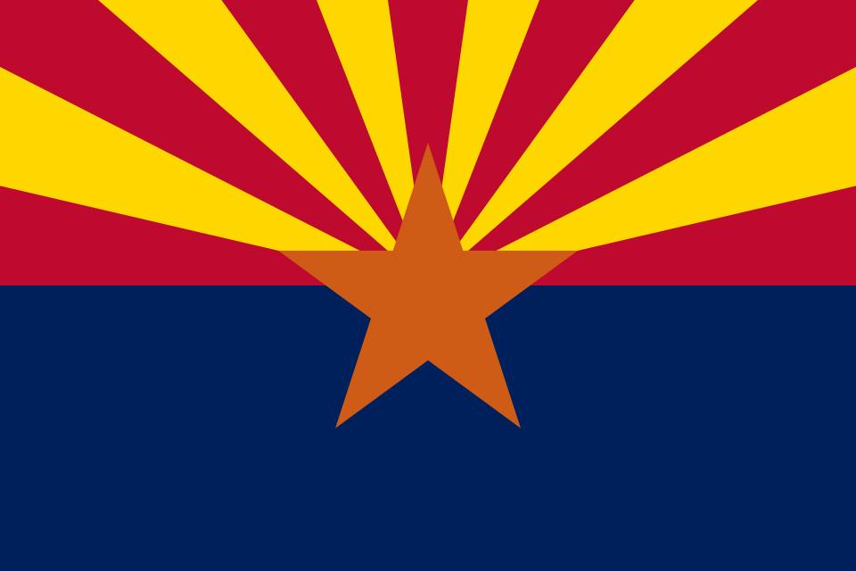

Thomas Dettmar
About Me
Hello my name is Thomas Dettmar, but I usually go by Tommy. I am 20 and live in Arizona, in the Pheonix valley area, but I'd love to move somewhere that's not so hot. I am the oldest sibling of 3, with a younger sister and a younger brother. I currently am living with my parents and siblings due to the health conditions and chronic illness and pain that I face daily. Because of these physical challenges BYU Pathways is the perfect program for me and being able to do college online has been crucial in me being able to continue my education and start a career. I love video games, Dungeons and Dragons, tv and movies, Art (even if I'm not the best at making it myself) and coding. I have done a course previously via a program in Arizona called EVIT, and have learned the basics of coding and programming while also getting certified in Python, JavaScript, HTML & CSS. I look forward to this course as furthering my skills and working towards a career but also learning more about something I like doing.
Your Location

Arizona is a southwestern state in the United States known for its desert climate, beautiful red rock landscapes, and the Grand Canyon. Despite the intense summer heat, Arizona offers incredible desert scenery, and large cities like Phoenix and Tucson.